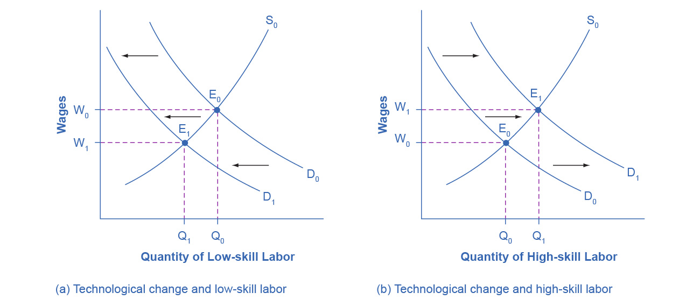

4.1 Demand and Supply at Work in Labor Markets
Learning Objectives
By the end of this section, you will be able to:
- Predict shifts in the demand and supply curves of the labor market
- Explain the impact of new technology on the demand and supply curves of the labor market
- Explain price floors in the labor market such as minimum wage or a living wage
Markets for labor have demand and supply curves, just like markets for goods. The law of demand applies in labor markets this way: A higher salary or wage—that is, a higher price in the labor market—leads to a decrease in the quantity of labor demanded by employers, while a lower salary or wage leads to an increase in the quantity of labor demanded. The law of supply functions in labor markets, too: A higher price for labor leads to a higher quantity of labor supplied; a lower price leads to a lower quantity supplied.
Equilibrium in the Labor Market
In 2020, nearly 41,000 registered nurses worked in the Minneapolis-St. Paul-Bloomington, Minnesota-Wisconsin metropolitan area, according to the BLS. They worked for a variety of employers: hospitals, doctors’ offices, schools, health clinics, and nursing homes. Figure 4.2 illustrates how demand and supply determine equilibrium in this labor market. The demand and supply schedules in Table 4.1 list the quantity supplied and quantity demanded of nurses at different salaries.

Figure 4.2 Labor Market Example: Demand and Supply for Nurses in Minneapolis-St. Paul-Bloomington The demand curve (D) of those employers who want to hire nurses intersects with the supply curve (S) of those who are qualified and willing to work as nurses at the equilibrium point (E). The equilibrium salary is $85,000 and the equilibrium quantity is 41,000 nurses. At an above-equilibrium salary of $90,000, quantity supplied increases to 45,000, but the quantity of nurses demanded at the higher pay declines to 40,000. At this above-equilibrium salary, an excess supply or surplus of nurses would exist. At a below-equilibrium salary of $75,000, quantity supplied declines to 34,000, while the quantity demanded at the lower wage increases to 47,000 nurses. At this below-equilibrium salary, excess demand or a shortage exists.
Table 4.1 Demand and Supply of Nurses in Minneapolis-St. Paul-Bloomington
The horizontal axis shows the quantity of nurses hired. In this example we measure labor by number of workers, but another common way to measure the quantity of labor is by the number of hours worked. The vertical axis shows the price for nurses’ labor—that is, how much they are paid. In the real world, this “price” would be total labor compensation: salary plus benefits. It is not obvious, but benefits are a significant part (as high as 30 percent) of labor compensation. In this example we measure the price of labor by salary on an annual basis, although in other cases we could measure the price of labor by monthly or weekly pay, or even the wage paid per hour. As the salary for nurses rises, the quantity demanded will fall. Some hospitals and nursing homes may reduce the number of nurses they hire, or they may lay off some of their existing nurses, rather than pay them higher salaries. Employers who face higher nurses’ salaries may also try to replace some nursing functions by investing in physical equipment, like computer monitoring and diagnostic systems to monitor patients, or by using lower-paid health care aides to reduce the number of nurses they need.
As the salary for nurses rises, the quantity supplied will rise. If nurses’ salaries in Minneapolis-St. Paul-Bloomington are higher than in other cities, more nurses will move to Minneapolis-St. Paul-Bloomington to find jobs, more people will be willing to train as nurses, and those currently trained as nurses will be more likely to pursue nursing as a full-time job. In other words, there will be more nurses looking for jobs in the area.
At equilibrium, the quantity supplied and the quantity demanded are equal. Thus, every employer who wants to hire a nurse at this equilibrium wage can find a willing worker, and every nurse who wants to work at this equilibrium salary can find a job. In Figure 4.2, the supply curve (S) and demand curve (D) intersect at the equilibrium point (E). The equilibrium quantity of nurses in the Minneapolis-St. Paul-Bloomington area is 41,000, and the equilibrium salary is $86,000 per year. This example simplifies the nursing market by focusing on the “average” nurse. In reality, of course, the market for nurses actually comprises many smaller markets, like markets for nurses with varying degrees of experience and credentials. Many markets contain closely related products that differ in quality. For instance, even a simple product like gasoline comes in regular, premium, and super-premium, each with a different price. Even in such cases, discussing the average price of gasoline, like the average salary for nurses, can still be useful because it reflects what is happening in most of the submarkets.
When the price of labor is not at the equilibrium, economic incentives tend to move salaries toward the equilibrium. For example, if salaries for nurses in Minneapolis-St. Paul-Bloomington were above the equilibrium at $90,000 per year, then 43,000 people want to work as nurses, but employers want to hire only 39,000 nurses. At that above-equilibrium salary, excess supply or a surplus results. In a situation of excess supply in the labor market, with many applicants for every job opening, employers will have an incentive to offer lower wages than they otherwise would have. Nurses’ salary will move down toward equilibrium.
In contrast, if the salary is below the equilibrium at, say, $60,000 per year, then a situation of excess demand or a shortage arises. In this case, employers encouraged by the relatively lower wage want to hire 40,000 nurses, but only 27,000 individuals want to work as nurses at that salary in Minneapolis-St. Paul-Bloomington. In response to the shortage, some employers will offer higher pay to attract the nurses. Other employers will have to match the higher pay to keep their own employees. The higher salaries will encourage more nurses to train or work in Minneapolis-St. Paul-Bloomington. Again, price and quantity in the labor market will move toward equilibrium.
Shifts in Labor Demand
The demand curve for labor shows the quantity of labor employers wish to hire at any given salary or wage rate, under the ceteris paribus assumption. A change in the wage or salary will result in a change in the quantity demanded of labor. If the wage rate increases, employers will want to hire fewer employees. The quantity of labor demanded will decrease, and there will be a movement upward along the demand curve. If the wages and salaries decrease, employers are more likely to hire a greater number of workers. The quantity of labor demanded will increase, resulting in a downward movement along the demand curve.
Shifts in the demand curve for labor occur for many reasons. One key reason is that the demand for labor is based on the demand for the good or service that is produced. For example, the more new automobiles consumers demand, the greater the number of workers automakers will need to hire. Therefore the demand for labor is called a “derived demand.” Here are some examples of derived demand for labor:
- The demand for chefs is dependent on the demand for restaurant meals.
- The demand for pharmacists is dependent on the demand for prescription drugs.
- The demand for attorneys is dependent on the demand for legal services.
As the demand for the goods and services increases, the demand for labor will increase, or shift to the right, to meet employers’ production requirements. As the demand for the goods and services decreases, the demand for labor will decrease, or shift to the left. Table 4.2 shows that in addition to the derived demand for labor, demand can also increase or decrease (shift) in response to several factors.
Table 4.2 Factors That Can Shift Demand
Link It Up
Click here to read more about “Trends and Challenges for Work in the 21st Century.”
Shifts in Labor Supply
The supply of labor is upward-sloping and adheres to the law of supply: The higher the price, the greater the quantity supplied and the lower the price, the less quantity supplied. The supply curve models the tradeoff between supplying labor into the market or using time in leisure activities at every given price level. The higher the wage, the more labor is willing to work and forego leisure activities. Table 4.3 lists some of the factors that will cause the supply to increase or decrease.
Table 4.3 Factors that Can Shift Supply
A change in salary will lead to a movement along labor demand or labor supply curves, but it will not shift those curves. However, other events like those we have outlined here will cause either the demand or the supply of labor to shift, and thus will move the labor market to a new equilibrium salary and quantity.
Technology and Wage Inequality: The Four-Step Process
Economic events can change the equilibrium salary (or wage) and quantity of labor. Consider how the wave of new information technologies, like computer and telecommunications networks, has affected low-skill and high-skill workers in the U.S. economy. From the perspective of employers who demand labor, these new technologies are often a substitute for low-skill laborers like file clerks who used to keep file cabinets full of paper records of transactions. However, the same new technologies are a complement to high-skill workers like managers, who benefit from the technological advances by having the ability to monitor more information, communicate more easily, and juggle a wider array of responsibilities. How will the new technologies affect the wages of high-skill and low-skill workers? For this question, the four-step process of analyzing how shifts in supply or demand affect a market (introduced in Demand and Supply) works in this way:
Step 1. What did the markets for low-skill labor and high-skill labor look like before the arrival of the new technologies? In Figure 4.3 (a) and Figure 4.3 (b), S0 is the original supply curve for labor and D0 is the original demand curve for labor in each market. In each graph, the original point of equilibrium, E0, occurs at the price W0 and the quantity Q0.

Figure 4.3 Technology and Wages: Applying Demand and Supply (a) The demand for low-skill labor shifts to the left when technology can do the job previously done by these workers. (b) New technologies can also increase the demand for high-skill labor in fields such as information technology and network administration.
Step 2. Does the new technology affect the supply of labor from households or the demand for labor from firms? The technology change described here affects demand for labor by firms that hire workers.
Step 3. Will the new technology increase or decrease demand? Based on the description earlier, as the substitute for low-skill labor becomes available, demand for low-skill labor will shift to the left, from D0 to D1. As the technology complement for high-skill labor becomes cheaper, demand for high-skill labor will shift to the right, from D0 to D1.
Step 4. The new equilibrium for low-skill labor, shown as point E1 with price W1 and quantity Q1, has a lower wage and quantity hired than the original equilibrium, E0. The new equilibrium for high-skill labor, shown as point E1 with price W1 and quantity Q1, has a higher wage and quantity hired than the original equilibrium (E0).
Thus, the demand and supply model predicts that the new computer and communications technologies will raise the pay of high-skill workers but reduce the pay of low-skill workers. From the 1970s to the mid-2000s, the wage gap widened between high-skill and low-skill labor. According to the National Center for Education Statistics, in 1980, for example, a college graduate earned about 30% more than a high school graduate with comparable job experience, but by 2019, a college graduate earned about 59% more than an otherwise comparable high school graduate. Many economists believe that the trend toward greater wage inequality across the U.S. economy is due to improvements in technology.
Link It Up
Visit this website to read about ten tech skills that have lost relevance in today’s workforce.
Price Floors in the Labor Market: Living Wages and Minimum Wages
In contrast to goods and services markets, price ceilings are rare in labor markets, because rules that prevent people from earning income are not politically popular. There is one exception: boards of trustees or stockholders, as an example, propose limits on the high incomes of top business executives.
The labor market, however, presents some prominent examples of price floors, which are an attempt to increase the wages of low-paid workers. The U.S. government sets a minimum wage, a price floor that makes it illegal for an employer to pay employees less than a certain hourly rate. In mid-2009, the U.S. minimum wage was raised to $7.25 per hour. Local political movements in a number of U.S. cities have pushed for a higher minimum wage, which they call a living wage. Promoters of living wage laws maintain that the minimum wage is too low to ensure a reasonable standard of living. They base this conclusion on the calculation that, if you work 40 hours a week at a minimum wage of $7.25 per hour for 50 weeks a year, your annual income is $14,500, which is less than the official U.S. government definition of what it means for a family to be in poverty. (A family with two adults earning minimum wage and two young children will find it more cost efficient for one parent to provide childcare while the other works for income. Thus the family income would be $14,500, which is significantly lower than the federal poverty line for a family of four, which was $26,500 in 2021.)
Supporters of the living wage argue that full-time workers should be assured a high enough wage so that they can afford the essentials of life: food, clothing, shelter, and healthcare. Since Baltimore passed the first living wage law in 1994, several dozen cities enacted similar laws in the late 1990s and the 2000s. The living wage ordinances do not apply to all employers, but they have specified that all employees of the city or employees of firms that the city hires be paid at least a certain wage that is usually a few dollars per hour above the U.S. minimum wage.
Figure 4.4 illustrates the situation of a city considering a living wage law. For simplicity, we assume that there is no federal minimum wage. The wage appears on the vertical axis, because the wage is the price in the labor market. Before the passage of the living wage law, the equilibrium wage is $10 per hour and the city hires 1,200 workers at this wage. However, a group of concerned citizens persuades the city council to enact a living wage law requiring employers to pay no less than $12 per hour. In response to the higher wage, 1,600 workers look for jobs with the city. At this higher wage, the city, as an employer, is willing to hire only 700 workers. At the price floor, the quantity supplied exceeds the quantity demanded, and a surplus of labor exists in this market. For workers who continue to have a job at a higher salary, life has improved. For those who were willing to work at the old wage rate but lost their jobs with the wage increase, life has not improved. Table 4.4 shows the differences in supply and demand at different wages.

Figure 4.4 A Living Wage: Example of a Price Floor The original equilibrium in this labor market is a wage of $10/hour and a quantity of 1,200 workers, shown at point E. Imposing a wage floor at $12/hour leads to an excess supply of labor. At that wage, the quantity of labor supplied is 1,600 and the quantity of labor demanded is only 700.
Table 4.4 Living Wage: Example of a Price Floor
The Minimum Wage as an Example of a Price Floor
The U.S. minimum wage is a price floor that is set either very close to the equilibrium wage or even slightly below it. About 1.5% of hourly workers in the U.S. are paid the minimum wage. In other words, the vast majority of the U.S. labor force has its wages determined in the labor market, not as a result of the government price floor. However, for workers with low skills and little experience, like those without a high school diploma or teenagers, the minimum wage is quite important. In many cities, the federal minimum wage is apparently below the market price for unskilled labor, because employers offer more than the minimum wage to checkout clerks and other low-skill workers without any government prodding.
Economists have attempted to estimate how much the minimum wage reduces the quantity demanded of low-skill labor. A typical result of such studies is that a 10% increase in the minimum wage would decrease the hiring of unskilled workers by 1 to 2%, which seems a relatively small reduction. In fact, some studies have even found no effect of a higher minimum wage on employment at certain times and places—although these studies are controversial. Well-known economists Walter Williams and Thomas Sowell, who both focus on the intersections of race and economics, argue that minimum wages increase discrimination and limit economic mobility. Williams, for example, indicates that higher minimum wages would increase employment barriers for lower-skilled workers, reducing the opportunity for them to learn on the job and gain experience that would give them more choice in employment.
Let’s suppose that the minimum wage lies just slightly below the equilibrium wage level. Wages could fluctuate according to market forces above this price floor, but they would not be allowed to move beneath the floor. In this situation, the price floor minimum wage is nonbinding —that is, the price floor is not determining the market outcome. Even if the minimum wage moves just a little higher, it will still have no effect on the quantity of employment in the economy, as long as it remains below the equilibrium wage. Even if the government increases the minimum wage by enough so that it rises slightly above the equilibrium wage and becomes binding, there will be only a small excess supply gap between the quantity demanded and quantity supplied.
These insights help to explain why U.S. minimum wage laws have historically had only a small impact on employment. Since the minimum wage has typically been set close to the equilibrium wage for low-skill labor and sometimes even below it, it has not had a large effect in creating an excess supply of labor. However, if the minimum wage increased dramatically—say, if it doubled to match the living wages that some U.S. cities have considered—then its impact on reducing the quantity demanded of employment would be far greater. The following Clear It Up feature describes in greater detail some of the arguments for and against changes to the minimum wage.
Clear It Up
What’s the harm in raising the minimum wage?
Because of the law of demand, a higher required wage will reduce the amount of low-skill employment either in terms of employees or in terms of work hours. Although there is controversy over the numbers, let’s say for the sake of the argument that a 10% rise in the minimum wage will reduce the employment of low-skill workers by 2%. Does this outcome mean that raising the minimum wage by 10% is bad public policy? Not necessarily.
If 98% of those receiving the minimum wage have a pay increase of 10%, but 2% of those receiving the minimum wage lose their jobs, are the gains for society as a whole greater than the losses? The answer is not clear, because job losses, even for a small group, may cause more pain than modest income gains for others. For one thing, we need to consider which minimum wage workers are losing their jobs. If the 2% of minimum wage workers who lose their jobs are struggling to support families, that is one thing. If those who lose their job are high school students picking up spending money over summer vacation, that is something else.
Another complexity is that many minimum wage workers do not work full-time for an entire year. Imagine a minimum wage worker who holds different part-time jobs for a few months at a time, with bouts of unemployment in between. The worker in this situation receives the 10% raise in the minimum wage when working, but also ends up working 2% fewer hours during the year because the higher minimum wage reduces how much employers want people to work. Overall, this worker’s income would rise because the 10% pay raise would more than offset the 2% fewer hours worked.
Of course, these arguments do not prove that raising the minimum wage is necessarily a good idea either. There may well be other, better public policy options for helping low-wage workers. (The Poverty and Economic Inequality chapter discusses some possibilities.) The lesson from this maze of minimum wage arguments is that complex social problems rarely have simple answers. Even those who agree on how a proposed economic policy affects quantity demanded and quantity supplied may still disagree on whether the policy is a good idea.